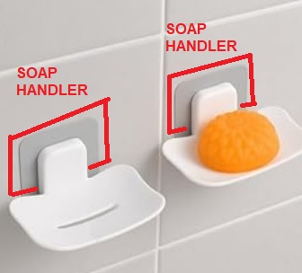
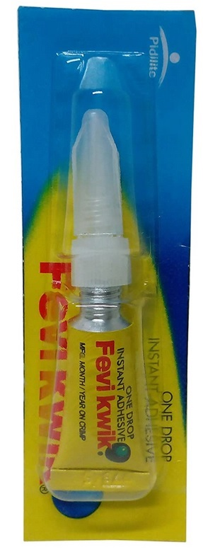

| S.No | Description | Image |
| 01. | During Apr-2026 IST the bathing soap handler pasted on bathroom tiles started removing slowly from the pasted location. The pasted percentage was only around 25%. |
 |
| 02. | On Fri 22-May-2026 IST I bought Fevi Kwick for 50.00 ₹ INR to paste the bathing soap handler again properly on bathroom tiles. | |
| 03. | Removed the bathing soap handler completely from the bathroom tiles before cleaning and pasting again. |
 |
| 04. | Used a sponge and cleaned the bathroom tiles properly at the removed pasted location. | |
| 05. | Used a sponge and cleaned the back side of the bathing soap handler properly before applying Fevi Kwick. | |
| 06. | Applied Fevi Kwick on the bathroom tiles and on the back side of the bathing soap handler for better pasting support. | |
| 07. | If the bathing soap handler is not pasted perfectly on bathroom tiles, Fevi Kwick costing 50.00 ₹ INR can be used for strong pasting support. | |
| 08. | My skin was not affected during cleaning and pasting work because Fevi Kwick is not like Quick Fix. | |